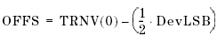

Offset
The following formula is used to calculate the Offset error:

For the calculation of OFFS only the DevLSB calculated with END_PT method can be selected. How the DevLSB is calculated with END_PT method is described in Calculation of DevLSB with End_PT Method.